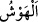

Rabbim razı oldum» dedim. «Şüphesiz bu büyük kalabalıkla beraber hiç bir sorgu ve
sual olunmadan yetmiş bin kişi cennete girecektir» denildi.”
Bunun üzerine Allah’ın Nebisi (s.a.): “Eğer gücünüz yetip bu yetmiş bin kişiden
olabilirseniz onlardan olmağa çalışın. Şayet buna gücünüz yetmezse, Mekke’nin
tepelerini dolduran sîmâlardan olmağa gayret ediniz. Buna da gücünüz yetmezse ufku
dolduranlardan olmağa çalışın. Şübhesiz ki, ben orada birbirine karışmış bir çok
insan gördüm.”[214]
Kamus’ta denilmiştir ki: Hadiste geçen birbirine karışmış anlamındaki (hevş)
kelimesi “sayısı çok” anlamındadır. Hevşe kelimesi “karışmak”, hevişetü kelimesi
“karışık cemaat” demektir. Hüvâşât ve tehâvüş kelimeleri de “insanların oluşturduğu
topluluklar” demektir.
Hadis-i şerifte şöyle buyrulur: “Bütün kışkırtma ve karışıklıklar, karışık
topluluklarda olur”[215] buyrulur.
Tehevveşû ve tehâveşû fiilleri “karıştılar, birbirine girdiler” demektir. Hâveşehum de
“onlara karıştı” anlamındadır.
Rivâyete gore, Peygamberimiz (s.a.): “Şübhesiz ki, cennet halkının yarısı
olacağınızı umarım” buyurmuş, peşinden de: “Bunların birçoğu önceki
ümmetlerdendir. Birçoğu da sonrakilerdendir” (el-Vâkıa 56/39-40) âyet-i kerîmelerini
okumuştur.[216]
Fakir (Bursevî) der ki: Bu açıklamalardan anlaşıldığına göre bu ümmetin sâlih amel
sâhibi bahtiyarları öncekilerden ve sonrakilerden olmak üzere pek çoktur. Geçmiş
ümmetlerinkiler de böyledir. Hayırda önde olanlar ise daha önce geçen âyet-i
kerîmelerin de ifâde ettiği gibi (bk. el-Vâkıa 56/13-14), bu ümmetin öncekileri arasında
çoktur, ama sonrakiler arasında değil.
Hasan Basrî (r.h) de bu görüştedir. Çünkü o şöyle demektedir: Bedir savaşında
bulunmuş yetmiş sahâbî gördüm. Onlar, sizin Allah’ın haram kıldığı şeylerden
sakındığınızdan daha çok, Allah’ın kendilerine helal kıldığı şeylerden sakınıyor ve uzak
duruyorlardı. Sizin bir iyiliğe sevindiğinizden daha çok onlar başlarına gelen belaya
seviniyorlardı. Şayet siz onları görmüş olsaydınız onlara deli derdiniz. Onlar sizin
iyilerinizi görselerdi, “bunların âhiretten nasipleri yok” derlerdi. Kötülerinizi
görselerdi bunların hesap gününe îmanlarının olmadığına hükmederlerdi. Onlara helâl
olan bir mal arz edilse, kalblerinin fesada uğraması korkusuyla onu almazlardı.
Geçmiş ümmetlerin “iyilikte önde olanları”na peygamberler de katılacak olursa bu
ümmetin önde olanlarından daha çok olurlar. Peygamberler onların dışında tutulacak
olursa, onların sayıları Hz. Muhammed (s.a.)’in ümmetinden az olurlar. Daha önce de
belirttiğimiz gibi, önceki ümmetlerin zâhidleri her ne kadar bu ümmetin zâhidlerinden
sayıca daha çok ise de pek çoğunun yakîn üzere bulundukları kesinleşmediği için az
sayılırlar. Bu ümmetin zâhidleri ise öncekilerden olanlara nisbetle her ne kadar sayıca
az iseler de yakîn üzere bulunmaları, sahih itikad sâhibi olmaları ve Kur’ân’a